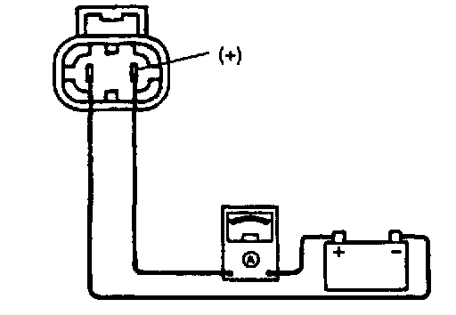
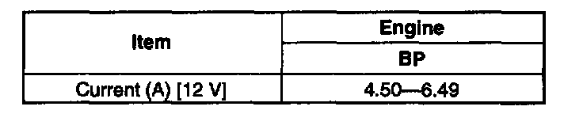

Radiator Cooling Fan Motor: Testing and Inspection
COOLING FAN MOTOR INSPECTION1. Verify that the battery is fully charged.
2. Disconnect the cooling fan motor connector.

3. Connect battery positive voltage and an ammeter to the cooling fan motor connector.

4. Verify that the cooling fan motor operates smoothly at the standard current draw.
5. If not as specified, replace the cooling fan motor.